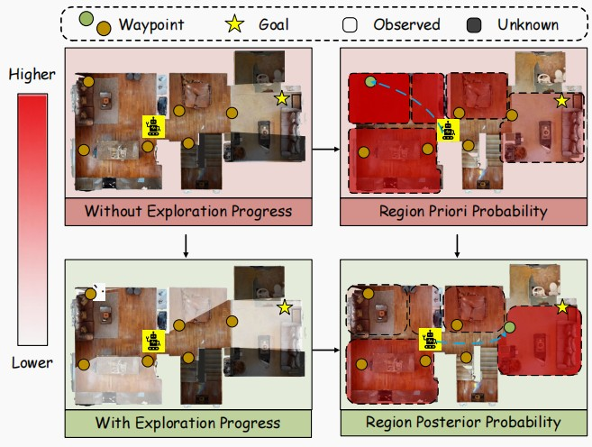
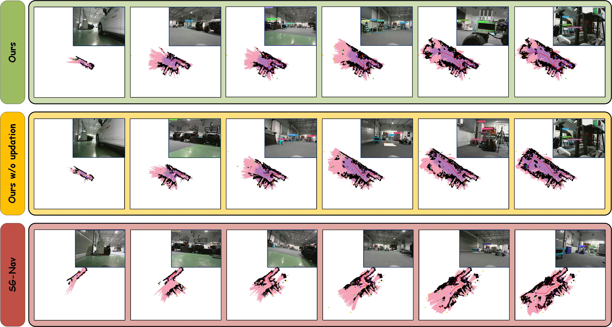

Poster

Abstract
Object Navigation requires an embodied agent to locate a target object specified by its category. Existing systems often remain inefficient and brittle due to their inability to accurately estimate the spatial probability distribution of the target object's presence. In this paper, we propose EPANav, an exploration-progress-aware Object Navigation framework that addresses this challenge by leveraging the complementary strengths of scene graph and grid map. EPANav explicitly couples semantic priors from the scene graph with exploration progress from the grid map to dynamically balance semantic guidance and information gathering. This approach reduces redundant revisits while avoiding the premature dismissal of under-explored areas. Additionally, EPANav learns environment-specific object co-occurrence statistics online from the scene graph and integrates them with large language model (LLM) priors, mitigating domain mismatch and improving robustness. Experimental results on MP3D and HM3D demonstrate consistent improvements over prior training-free baselines, while real-world trials further validate the practical effectiveness of the proposed approach.
Video
Simulation Demos
Targets
Real-World Search Process
